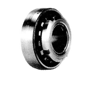
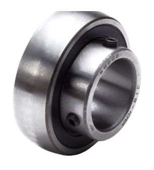
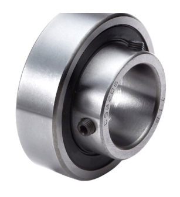
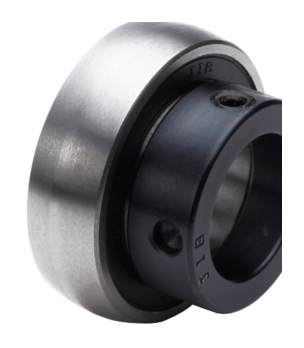
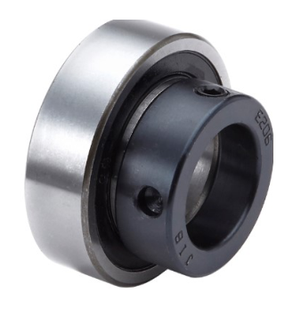
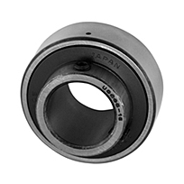
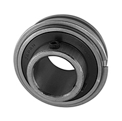
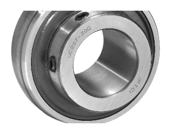

Ball Bearing Units
볼 베어링 유닛
구름 볼 베어링과 하우징을 일체화한 유닛의 인서트 베어링(하우징 안에 들어가는 알맹이) 규격입니다. UC(내경 표준)·UK(테이퍼 내경, 어댑터 슬리브 사용) 계열로 공급됩니다.
이 인서트를 감싸는 필로우 블록(P)·플랜지형(F/FA/FB/FC) 등 하우징 자체의 종류·치수는 유닛 케이스 페이지에서, 테이크업형 하우징은 테이크업 유닛 페이지에서 확인하실 수 있습니다.
형번 또는 치수 일부만 입력해도 검색됩니다.
아래 UC·UK·SB·SA·SC·UR·SER·HC(CHC)·UCX 표는 인서트 베어링 자체의 규격(d·D·B)입니다. 하우징 바깥 치수(H·A·N·L 등)는 하우징 종류별로 유닛 케이스 페이지에 별도 정리되어 있습니다.
UC(내경 표준, 세트스크류 고정) 인서트 베어링입니다. 소형(UC2xx)·중형(UC3xx) 규격을 모두 포함합니다.
당사 SWS 카탈로그 규격 도면 · 구조 단면도(개념도)

d(내경) · D(외경) · B(폭) · 사각형=세트스크류(고정나사)
UC 시리즈79건
| 형번 | d(내경) | D(외경) | B(폭) |
|---|---|---|---|
| UC201 | 12 | 47 | 31 |
| UC201-8 | 12.7 | 47 | 31 |
| UC202 | 15 | 47 | 31 |
| UC202-10 | 15.8 | 47 | 31 |
| UC203 | 17 | 47 | 31 |
| UC204-12 | 19.1 | 47 | 31 |
| UC204 | 20 | 47 | 31 |
| UC205-14 | 22.2 | 52 | 34.1 |
| UC205-15 | 23.8 | 52 | 34.1 |
| UC205 | 25 | 52 | 34.1 |
| UC205-16 | 25.4 | 52 | 34.1 |
| UC206-18 | 28.6 | 62 | 38.1 |
| UC206 | 30 | 62 | 38.1 |
| UC206-19 | 30.2 | 62 | 38.1 |
| UC207-20 | 31.7 | 72 | 42.9 |
| UC207-21 | 33.3 | 72 | 42.9 |
| UC207-22 | 34.9 | 72 | 42.9 |
| UC207 | 35 | 72 | 42.9 |
| UC207-23 | 36.5 | 72 | 42.9 |
| UC208-24 | 38.1 | 80 | 49.2 |
| UC208-25 | 39.7 | 80 | 49.2 |
| UC208 | 40 | 80 | 49.2 |
| UC209-26 | 41.3 | 85 | 49.2 |
| UC209-27 | 42.8 | 85 | 49.2 |
| UC209-28 | 44.4 | 85 | 49.2 |
| UC209 | 45 | 85 | 49.2 |
| UC210-30 | 47.6 | 90 | 51.6 |
| UC210-31 | 49.2 | 90 | 51.6 |
| UC210 | 50 | 90 | 51.6 |
| UC211-32 | 50.8 | 100 | 55.6 |
| UC211-34 | 53.9 | 100 | 55.6 |
| UC211 | 55 | 100 | 55.6 |
| UC211-35 | 55.6 | 100 | 55.6 |
| UC212-36 | 57.2 | 110 | 65.1 |
| UC212 | 60 | 110 | 65.1 |
| UC212-38 | 60.3 | 110 | 65.1 |
| UC212-39 | 61.9 | 110 | 65.1 |
| UC213-40 | 63.5 | 120 | 65.1 |
| UC213 | 65 | 120 | 65.1 |
| UC214-44 | 69.8 | 125 | 74.6 |
| UC214 | 70 | 125 | 74.6 |
| 형번 | d(내경) | D(외경) | B(폭) |
|---|---|---|---|
| UC215 | 75 | 130 | 77.8 |
| UC215-48 | 76.2 | 130 | 77.8 |
| UC216 | 80 | 140 | 82.6 |
| UC217-52 | 82.5 | 150 | 85.7 |
| UC217 | 85 | 150 | 85.7 |
| UC218 | 90 | 160 | 96 |
| UC305 | 25 | 62 | 38 |
| UC305-16 | 25.4 | 62 | 38 |
| UC306-18 | 28.6 | 72 | 43 |
| UC306 | 30 | 72 | 43 |
| UC307-20 | 31.7 | 80 | 48 |
| UC307-22 | 34.9 | 80 | 48 |
| UC307 | 35 | 80 | 48 |
| UC308-24 | 38.1 | 90 | 52 |
| UC308 | 40 | 90 | 52 |
| UC309-28 | 44.4 | 100 | 57 |
| UC309 | 45 | 100 | 57 |
| UC310-31 | 49.2 | 110 | 61 |
| UC310 | 50 | 110 | 61 |
| UC311-32 | 50.8 | 120 | 66 |
| UC311 | 55 | 120 | 66 |
| UC312 | 60 | 130 | 71 |
| UC313-40 | 63.5 | 140 | 75 |
| UC313 | 65 | 140 | 75 |
| UC314-44 | 69.8 | 150 | 78 |
| UC314 | 70 | 150 | 78 |
| UC315 | 75 | 160 | 82 |
| UC315-48 | 76.2 | 160 | 82 |
| UC316 | 80 | 170 | 86 |
| UC317 | 85 | 180 | 96 |
| UC318-56 | 88.9 | 190 | 96 |
| UC318 | 90 | 190 | 96 |
| UC319 | 95 | 200 | 103 |
| UC320 | 100 | 215 | 108 |
| UC320-64 | 101.6 | 215 | 108 |
| UC321 | 105 | 225 | 112 |
| UC322 | 110 | 240 | 117 |
| UC324 | 120 | 260 | 126 |
| UC326 | 130 | 280 | 135 |
| UC328 | 140 | 300 | 145 |
단위: mm · 당사 SWS 카탈로그(베어링 치수표) 기준
UK(테이퍼 내경, 어댑터 슬리브 사용) 인서트 베어링입니다. 소형(UK2xx)·중형(UK3xx) 규격을 모두 포함합니다.
당사 SWS 카탈로그 규격 도면 · 구조 단면도(개념도)

d(내경, 테이퍼) · D(외경) · B(폭) · 어댑터 슬리브로 축에 고정
| 형번 | d(내경) | D(외경) | B(폭) |
|---|---|---|---|
| UK205 | 25 | 52 | 22 |
| UK206 | 30 | 62 | 24 |
| UK207 | 35 | 72 | 26 |
| UK208 | 40 | 80 | 27 |
| UK209 | 45 | 85 | 28 |
| UK210 | 50 | 90 | 30 |
| UK211 | 55 | 100 | 32 |
| UK212 | 60 | 110 | 34 |
| UK213 | 65 | 120 | 37 |
| UK215 | 75 | 130 | 38 |
| UK216 | 80 | 140 | 40 |
| UK217 | 85 | 150 | 43 |
| UK218 | 90 | 160 | 46 |
| UK305 | 25 | 62 | 27 |
| UK306 | 30 | 72 | 30 |
| UK307 | 35 | 80 | 33 |
| 형번 | d(내경) | D(외경) | B(폭) |
|---|---|---|---|
| UK308 | 40 | 90 | 35 |
| UK309 | 45 | 100 | 38 |
| UK310 | 50 | 110 | 40 |
| UK311 | 55 | 120 | 43 |
| UK312 | 60 | 130 | 46 |
| UK313 | 65 | 140 | 48 |
| UK315 | 75 | 160 | 54 |
| UK316 | 80 | 170 | 57 |
| UK317 | 85 | 180 | 60 |
| UK318 | 90 | 190 | 63 |
| UK319 | 95 | 200 | 66 |
| UK320 | 100 | 215 | 70 |
| UK322 | 110 | 240 | 80 |
| UK324 | 120 | 260 | 86 |
| UK326 | 130 | 280 | 92 |
| UK328 | 140 | 300 | 98 |
단위: mm · 당사 SWS 카탈로그(베어링 치수표) 기준
세트스크류(고정나사)로 축에 고정하는 SB(CSB) 인서트 베어링입니다.
JIB 공식 카탈로그(제품 개요) 사진 · 구조 단면도(개념도)

SB (구면 외륜)

CSB (원통 외륜)
d(내경) · D(외경) · B(폭) · SB=구면 외륜 / CSB=원통 외륜 (하우징 규격 공유)
| 형번 | d(내경) | D(외경) | B(폭) |
|---|---|---|---|
| SB201 | 12 | 40 | 22.5 |
| SB202 | 15 | 40 | 22.5 |
| SB203 | 17 | 40 | 22.5 |
| SB204 | 20 | 47 | 25.5 |
| SB205 | 25 | 52 | 27 |
| SB206 | 30 | 62 | 30 |
| SB207 | 35 | 72 | 35 |
| SB208 | 40 | 80 | 40 |
| SB209 | 45 | 85 | 41.2 |
| SB210 | 50 | 90 | 43.6 |
| SB211 | 55 | 100 | 45.4 |
| SB212 | 60 | 110 | 53.2 |
단위: mm · SWS 카탈로그에 없어 JIB(제일베어링) 공식 카탈로그를 기준으로 작성했습니다.
편심고정링으로 축에 고정하는 SA(CSA) 인서트 베어링입니다.
JIB 공식 카탈로그(제품 개요) 사진 · 구조 단면도(개념도)

SA (구면 외륜)

CSA (원통 외륜)
d(내경) · D(외경) · B1(폭) · SA=구면 외륜 / CSA=원통 외륜 (하우징 규격 공유) · 점선 원=편심고정링
| 형번 | d(내경) | D(외경) | B1(폭) |
|---|---|---|---|
| SA201 | 12 | 40 | 28.6 |
| SA202 | 15 | 40 | 28.6 |
| SA203 | 17 | 40 | 28.6 |
| SA204 | 20 | 47 | 31 |
| SA205 | 25 | 52 | 31 |
| SA206 | 30 | 62 | 35.7 |
| SA207 | 35 | 72 | 38.9 |
| SA208 | 40 | 80 | 43.7 |
| SA209 | 45 | 85 | 43.7 |
| SA210 | 50 | 90 | 43.7 |
| SA211 | 55 | 100 | 48.4 |
| SA212 | 60 | 110 | 53.1 |
단위: mm · SWS 카탈로그에 없어 JIB(제일베어링) 공식 카탈로그를 기준으로 작성했습니다.
압입 고정형 SC 인서트 베어링입니다.
JIB 공식 카탈로그(제품 개요) 사진 · 구조 단면도(개념도)

SC (압입 고정형)
d(내경) · D(외경) · C(폭) · 별도 고정나사 없이 하우징에 압입 고정 · 외형 치수는 6200계열 볼베어링과 동일(JIB 자료)
| 형번 | d(내경) | D(외경) | C(폭) |
|---|---|---|---|
| SC201 | 12 | 32 | 10 |
| SC202 | 15 | 35 | 11 |
| SC203 | 17 | 40 | 12 |
| SC204 | 20 | 47 | 14 |
| SC205 | 25 | 52 | 15 |
| SC206 | 30 | 62 | 16 |
| SC207 | 35 | 72 | 17 |
| SC208 | 40 | 80 | 18 |
| SC209 | 45 | 85 | 19 |
| SC210 | 50 | 90 | 20 |
| SC211 | 55 | 100 | 21 |
| SC212 | 60 | 110 | 22 |
단위: mm · SWS 카탈로그에 없어 JIB(제일베어링) 공식 카탈로그를 기준으로 작성했습니다.
세트스크류(고정나사)로 축에 고정하는 UR 인서트 베어링입니다. SB와 같은 “구면 외륜·세트스크류” 방식이지만, 하우징 규격이 SB와 달라 서로 호환되지 않는 별도 계열입니다.
실물 사진 · 구조 단면도(개념도) · SWS·JIB 자료에 없어 해외 정식 제조사 카탈로그 기준

d(내경) · D(외경) · B(폭) · 구면 외륜 · 세트스크류 고정 (SB보다 협폭 하우징 계열)
| 형번 | d(내경) | D(외경) | B(폭) |
|---|---|---|---|
| UR204-12MM | 12 | 47 | 31 |
| UR204-15MM | 15 | 47 | 31 |
| UR204-17MM | 17 | 47 | 31 |
| UR204 | 20 | 47 | 31 |
| UR205 | 25 | 52 | 34.9 |
| UR206 | 30 | 62 | 38.1 |
| UR207 | 35 | 72 | 42.9 |
| UR208 | 40 | 80 | 49.2 |
| UR209 | 45 | 85 | 49.2 |
| UR210 | 50 | 90 | 51.6 |
| UR211 | 55 | 100 | 55.6 |
| UR212 | 60 | 110 | 65.1 |
단위: mm · SWS·JIB 자료에 없어 해외 정식 제조사(UBC/Universal Bearings) 공식 카탈로그를 기준으로 작성했습니다.
편심고정링(칼라)으로 축에 고정하는 SER 인서트 베어링입니다. SA와 같은 “구면 외륜·편심칼라” 방식이지만, 하우징 규격이 SA와 달라 서로 호환되지 않는 별도 계열입니다.
실물 사진 · 구조 단면도(개념도) · SWS·JIB 자료에 없어 해외 정식 제조사 카탈로그 기준

d(내경) · D(외경) · B(폭) · 구면 외륜 · 점선 원=편심고정링 (SA보다 협폭 하우징 계열)
| 형번 | d(내경) | D(외경) | B(폭) |
|---|---|---|---|
| SER204 | 20 | 47 | 31 |
| SER205 | 25 | 52 | 34.9 |
| SER206 | 30 | 62 | 38.1 |
| SER207 | 35 | 72 | 42.9 |
| SER208 | 40 | 80 | 49.2 |
| SER209 | 45 | 85 | 49.2 |
| SER210 | 50 | 90 | 51.6 |
| SER211 | 55 | 100 | 55.6 |
| SER212 | 60 | 110 | 65.1 |
단위: mm · SWS·JIB 자료에 없어 해외 정식 제조사(AMI Bearings) 공식 카탈로그를 기준으로 작성했습니다. ※ SER는 20mm 미만 소형 규격이 없습니다.
편심고정링(칼라)으로 축에 고정하는 HC(CHC) 인서트 베어링입니다. UC와 비슷한 폭을 가지면서 편심칼라로 고정하는 계열로, SA·SER보다 폭이 넓습니다. HC=구면 외륜, CHC=원통 외륜(하우징 규격 공유)입니다.
실물 사진(HC205-16) · 구조 단면도(개념도) · SWS·JIB 자료에 없어 해외 정식 제조사 카탈로그 기준

d(내경) · D(외경) · B(폭) · HC=구면 외륜 / CHC=원통 외륜 (하우징 규격 공유) · 점선 원=편심고정링
| 형번 | d(내경) | D(외경) | B(폭) |
|---|---|---|---|
| HC201 | 12 | 40 | 28.6 |
| HC202 | 15 | 47 | 32.0 |
| HC203 | 17 | 47 | 32.0 |
| HC204 | 20 | 47 | 32.0 |
| HC205 | 25 | 52 | 38.1 |
| HC206 | 30 | 62 | 44.5 |
| HC207 | 35 | 72 | 55.6 |
| HC208 | 40 | 80 | 60.3 |
| HC209 | 45 | 85 | 63.5 |
| HC210 | 50 | 90 | 69.9 |
| HC211 | 55 | 100 | 76.2 |
| HC212 | 60 | 110 | 84.1 |
| HC213 | 65 | 120 | 86.0 |
| HC214 | 70 | 125 | 90.0 |
| HC215 | 75 | 130 | 101.6 |
단위: mm · SWS·JIB 자료에 없어 해외 정식 제조사(Peer Bearing) 공식 카탈로그를 기준으로 작성했습니다.
UC보다 넓은 폭의 내륜을 사용하는 중하중(medium duty)용 세트스크류형 UCX 인서트 베어링입니다. 짝을 이루는 하우징은 유닛 케이스 페이지의 FCX(4볼트 플랜지) 등입니다.
실물 사진(UC207-20G) · 구조 단면도(개념도) · SWS·JIB 자료에 없어 해외 정식 제조사 카탈로그 기준

d(내경) · D(외경) · B(폭) · UC보다 폭이 넓은 중하중용 광폭 내륜
| 형번 | d(내경) | D(외경) | B(폭) |
|---|---|---|---|
| UCX05 | 25 | 62 | 38.1 |
| UCX06 | 30 | 72 | 42.9 |
| UCX07 | 35 | 80 | 49.2 |
| UCX08 | 40 | 85 | 49.2 |
| UCX09 | 45 | 90 | 51.6 |
| UCX10 | 50 | 100 | 55.6 |
| UCX11 | 55 | 110 | 65.1 |
| UCX12 | 60 | 120 | 65.1 |
| UCX13 | 65 | 125 | 74.6 |
| UCX14 | 70 | 130 | 77.8 |
| UCX15 | 75 | 140 | 82.6 |
| UCX17 | 85 | 160 | 96.0 |
| UCX20 | 100 | 190 | 117.5 |
단위: mm · SWS·JIB 자료에 없어 해외 정식 제조사(IPTCI Bearings) 공식 카탈로그를 기준으로 작성했습니다.
※ 형번별 인치 보어(-8, -10 등) 세부 규격은 표에 넣지 않고 대표 미터 보어 규격만 실었습니다. 정밀 가공·발주 전에는 반드시 당사 정식 규격표 원본으로 최종 확인하시기 바랍니다.
이 제품군은 ISO 492 일반 허용공차 규격이 적용되지 않는(또는 별도 정밀등급이 적용되는) 품목으로, 공차는 제조사 자체 규격을 따릅니다. 정확한 공차는 발주 전 문의 바랍니다.